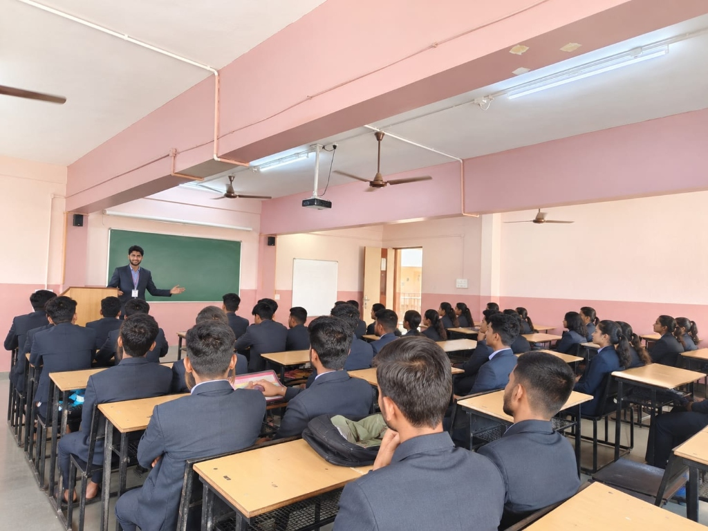
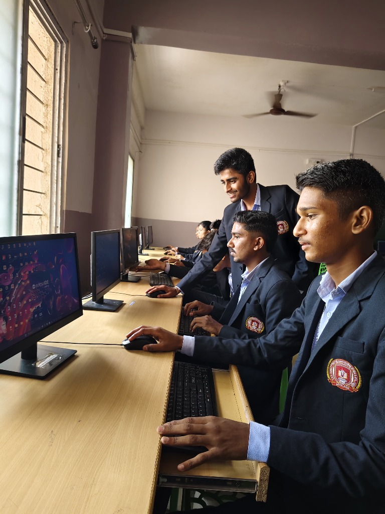
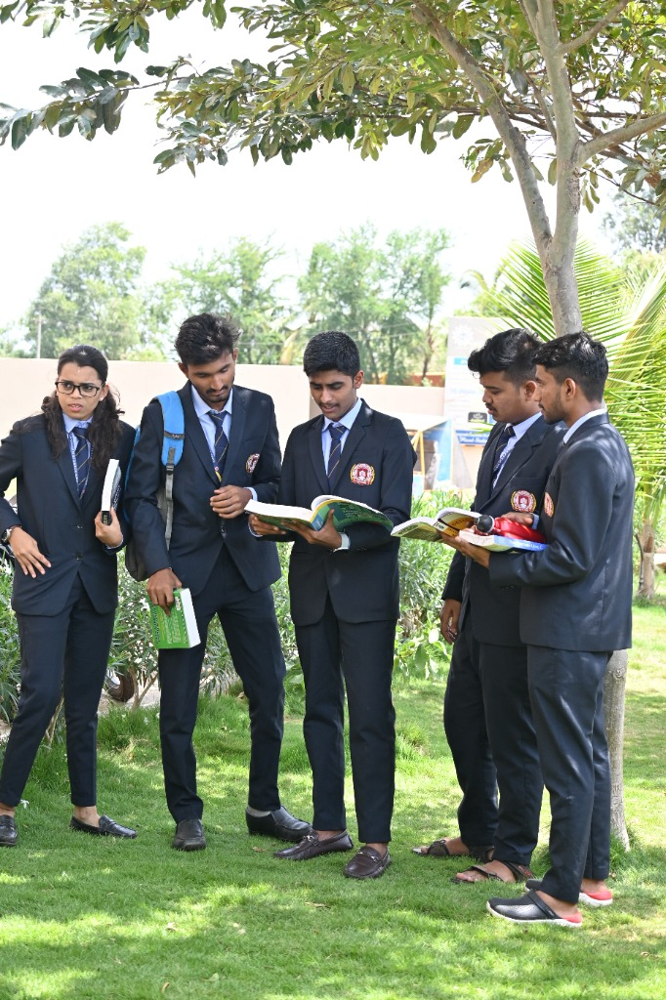
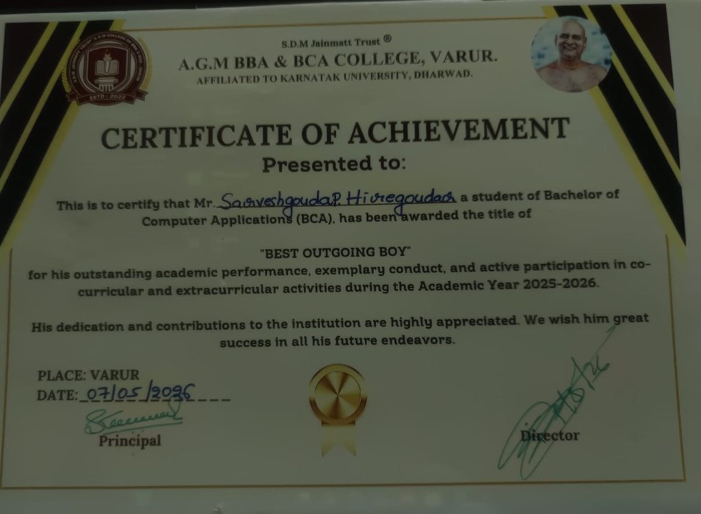

1. The Growth Trajectory
Over three years at AGM College of BBA and BCA (2023–2026), I evolved from a quiet student into a trusted peer educator, final-year Class Representative, and head student coordinator for college-wide technical festivals.
My Path: Student Volunteer → Technical Seminar Presenter → Peer Educator → Class Representative → Academic Event Coordinator → Best Outgoing Boy (2025–2026).
2. Technical Peer Educator & Teaching Assistant (2023–2026)
Recognizing my technical grasp, faculty members selected me to mentor and teach my own classmates. Over three years, this grew into a regular rhythm of approximately two seminars per week.
- Audience: 40–50 undergraduate classmates per session.
- Subjects Taught: Hands-on Linux CLI commands,and cirriculam subjects and applied business computing.
- Hands-on Format: Replaced theoretical slides with live terminal demonstrations and collaborative code debugging.
- Why It Mattered for PM: When teaching 50 peers, you cannot hide behind jargon. I learned to gauge comprehension in real-time, anticipate where non-technical students get stuck, and adapt explanations until the concept clicked.

3. Final-Year Class Representative (Stakeholder Management)
In our final year, my classmates elected me as their Class Representative (CR). I served as the primary two-way liaison between a cohort of 50+ students and the college administration.
Advocating for the Dedicated Computer Lab
- The Problem: Final-year BCA students lacked dedicated, uninterrupted lab access to build, debug, and test complex capstone projects.
- The Action: As CR, I gathered student requirements, structured a proposal detailing resource scheduling, and presented the business case directly to faculty heads and the principal.
- The Outcome: The administration approved the request, granting students an independent lab space that significantly boosted project completion rates.


4. Academic Event Coordination (Agratha Technical Fest)
I took senior ownership of major technical competitions during our college festival, Agratha, managing logistics, question curation, and live judging:
| Event & Year | Competition Type | My Leadership Role | Scope & Responsibilities |
|---|---|---|---|
| Agratha 2K26 | Debugging Battle | Senior Student Coordinator | Authored all technical debugging questions across multiple rounds for 15 participating teams. Built scoring tables and evaluated final rounds based on punctuality, smart work, and clean problem resolution. |
| Agratha 2K25 | Ideathon | Senior Student Coordinator | Led 19 teams through technical ideation rounds. Headed the final English communication round, co-designing evaluation rubrics alongside English professor Dr. Sadiq Ali. |
| Agratha 2K24 | Techno Treasure Hunt | Participant | Won 1st Place |
5. Recognitions & Competitive Wins
- Best Outgoing Boy (Academic Year 2025–2026): Awarded by A.G.M BBA & BCA College, Varur, for outstanding academic performance, exemplary conduct, and active participation in co-curricular activities.
- 1st Place: Techno Treasure Hunt: Agratha 2K24, demonstrating rapid analytical deduction and technical problem-solving.
- 2nd Place: Acumen 2026: Inter-collegiate management & technology fest held at PC Jabin College, Hubli.

6. How Leadership Translates into Product Management
User Empathy
Mentoring classmates revealed firsthand where students struggle. I learned to design seminar curriculums around user pain rather than what was easiest to teach.
Stakeholder Alignment
Serving as Class Representative taught me that listening is only half the battle; translating student needs into terms administrators care about is what delivers results.
Extreme Ownership
Whether setting up an Ideathon round or delivering client software, true leadership means stepping forward to own the outcome without waiting for permission.